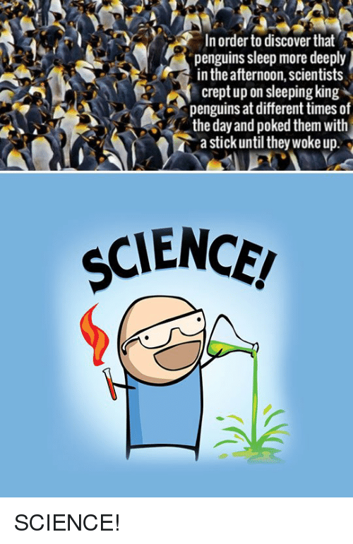
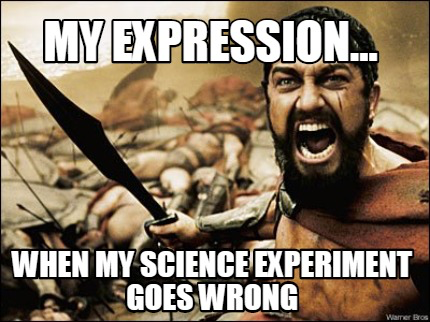
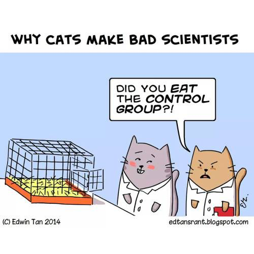

APSci Independent Scientific Research Project and Experiment
In APSci this year, each student will design and execute an independent scientific research project and corresponding science experiment.
The project includes:
- writing a background research paper
- designing an experiment using the scientific method
- executing this experiment (setting up the experiment, collecting data, analyzing data and results, summarizing conclusions in a final report)
- creating a display board about the experiment
- presenting your project to the class on April 10, 2017
Here's what you will turn in as we go along:
| Week | Date | Due in class on this date: |
| 3 | Oct 3 | Decide on your Testable Question |
| 6 | Oct 17 | Background Research Report |
| 8 | Oct 31 | Written Plan of your Science Experiment |
| 10 | Nov 14 | Parent Signature for Science Experiment Plan |
| 14 | Jan 9 | (not due in class: but begin Science Experiment, collect/record data) |
| 17 | Jan 30 | Science Experiment data log (check in class) |
| 21 | March 6 | Experiment Data Log & completed Graphs |
| 23 | March 20 | Complete Experiment Binder (background report, data, lab report) |
| 26 | April 10 | Experiment Display Board & Oral Presentation |
We will have 4 four Scientific Method classes:
Sept 21, Oct. 19, Jan 18, Feb 15, 10 am to 12 pm, place to be determined. We will cover testable questions, hypotheses, independent, dependent, and control variables, analyzing and graphing your data, and expectations for your display board.
Extra copies of class handouts:
Science Experiment Parent Approval Form
10 Steps for your Science Experiment
Optional but Helpful:
This article from the Deseret Morning News is about a high school student who built a nuclear fusion reactor from scavenged parts.
How to design a Science Fair project:
Project Resources for Students from the Los Angeles County Science Fair organizers
Los Angeles County Science & Engineering Fair
The Los Angeles County Science Fair, a 501(c)(3) non-profit organization has as its purpose to establish, run, support and operate an annual science and engineering fair in Los Angeles County for all middle and high school students enrolled in L.A. County public and private schools.



